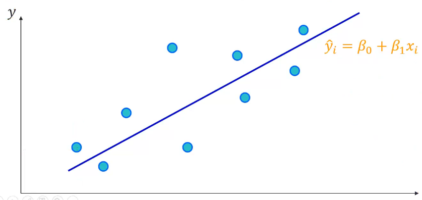
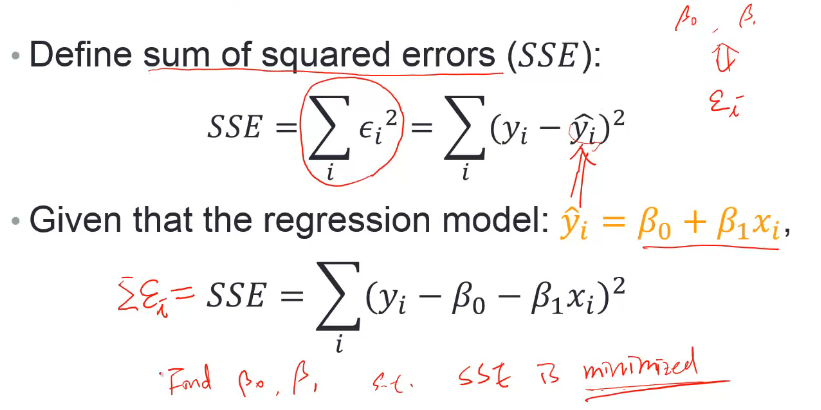
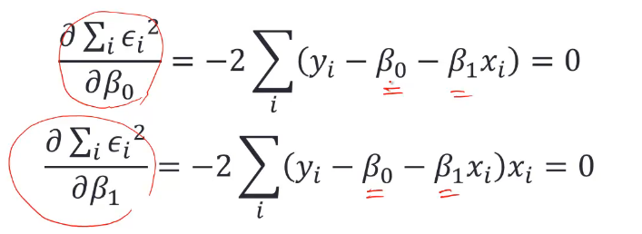
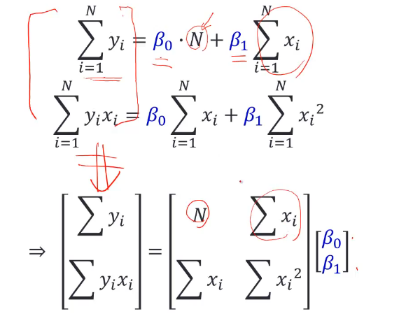
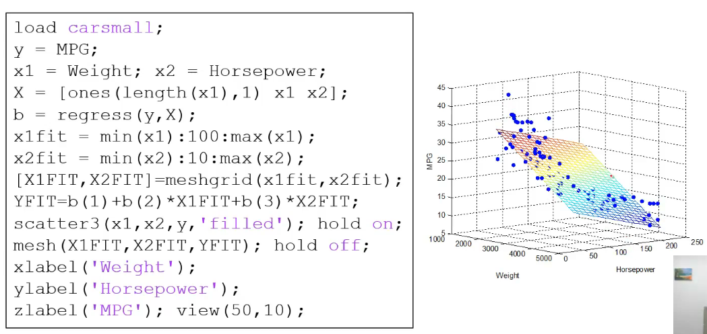

Simple Linear Regression
- A bunch of data points (xi, yi) are collected
- Assume x and y are linearly correlated

Linear Regression Formulation

想要求解得β0和β1使SSE最小，就要做微分
Solving Least-squares Problem
- SSE is minimized when its gradient with respect to each parameter is equal to zero:

Least-squares Solution
- Suppose there exists N data points:

Polynomial Curve Fitting: polyfit()
- Curve fitting for polynomials of different orders
1 | x = [-1.2 -0.5 0.3 0.9 1.8 2.6 3.0 3.5]; |
1 代表一次方得polynomial， 即f(x) = ax + b
上例中 fit(1) -> a, fit(2) -> b
1 | xfit = [x(1):0.1:x(end)]; |
Are x and y Linearly Correlated?
- if not, the line may not well describe their relationship
- Check the linearity by using:
- scatter(): scatterplot 画散点图
- corrcoef(): correlaition coefficient, -1<= r <= 1 相关系数 很强正相关 趋近1 ，很强负相关 趋近-1
1 | x = [-1.2 -0.5 0.3 0.9 1.8 2.6 3.0 3.5]; |
corrcoef(x, y) 得到一个矩阵，对应x跟x、x跟y、y跟x、y跟y的相关系数
Higher Order Polynomials
1 | x = [-1.2 -0.5 0.3 0.9 1.8 2.6 3.0 3.5]; |
is it better to use higher order polynomials?
no ,过拟合
What if There Exists More Variables?
- Equations associated with more than one explanatory variables:
y = β0 + β1x1 + β2x2
- Multiple linear regression: regress()
- Note: the function gives you more statistics of the regression model
Multiple Linear Regression: regress()

What if the Equations Are Not Linear?
- How do we do curve fitting using nonlinear equations?
使用cftool工具
Interpolation内插 vs Regression回归
- Interpolation:
- The process of finding an approximation of a function
- The fit does traverse all known points
Regression:
- The process of finding a curve of best fit
- The fit generally does not pass through the data points
Linear Interpolation: interpl()
1 | x = linspace(0, 2*pi, 40); x_m = x; |
Spline Interpolation: spline()
更圆滑的内插1
2
3
4
5m_i = ~isnan(x_m);
y_i = spline(x_m(m_i), y_m(m_i), x);
hold on; plot(x, y_i, '-g', 'LineWidth', 2); hold off;
h = legend('Original', 'Linear', 'Spline');
set(h, 'FontName', 'Times New Roman');